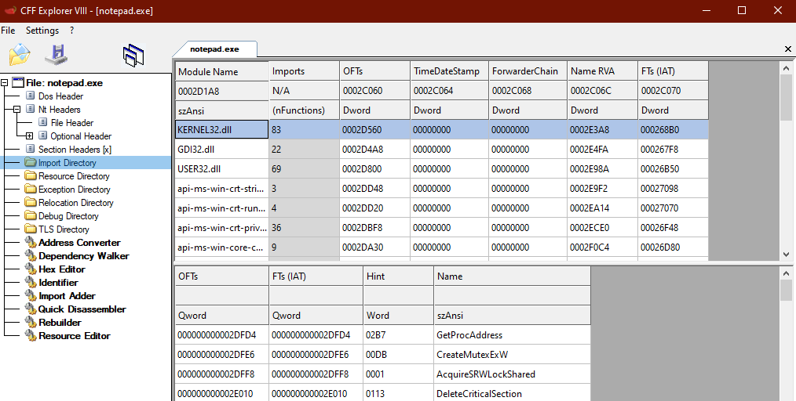

Import Directory
Contains info about all the imported functions in the binary from external libraries.
http://pinvoke.net/default.aspx/Structures/IMAGE_IMPORT_DESCRIPTOR.html## Values of Interest
Name ◇ contains an offset to the name of imported DLL
OriginalFirstThunk ◇ points to the Import Lookup Table - a list of functions to import
FirstThunk ◇ points to the Import Address Table - gets filled with function addresses when PE is loaded